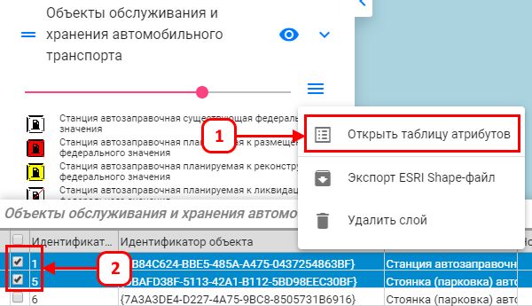
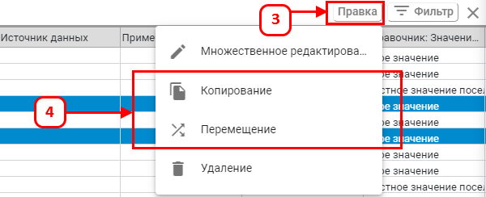
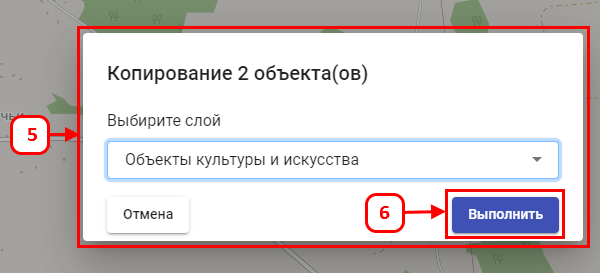

Для копирования/переноса данных из текущего в целевой слой:
-
В списке слоёв нажмите правой кнопкой мыши на текущий слой, в появившемся окне выберите
«Открыть таблицу атрибутов».
-
Галочками выделите копируемые/перемещаемые объекты в таблице.

- Нажмите кнопку «Правка».
- Затем «Копирование» или «Перенос». <
- В появившемся окне выберите целевой слой.
-
Нажмите «Выполнить».

Объекты скопированы/перемещены в целевой слой.